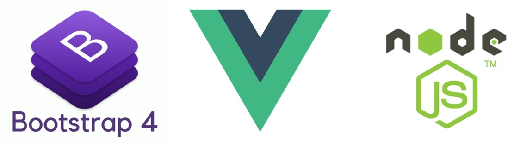

HTML – язык гипертекстовой разметки. Интерпретируется браузерами. Полученный в результате интерпретации форматированный текст отображается на экране устройства.
CSS – каскадные таблицы стилей – формальный язык описания внешнего вида документа, написанного с использованием языка разметки.
JavaScript – язык программирования, который позволяет создать динамически обновляемый контент на странице.

Bootstrap — свободный набор инструментов для создания сайтов и веб-приложений. Включает в себя HTML- и CSS-шаблоны оформления для типографики, веб-форм, кнопок, меток, блоков навигации и прочих компонентов веб-интерфейса, включая JavaScript-расширения.
Ссылка на официальный сайт: https://getbootstrap.com/
Vue.js — JavaScript-фреймворк с открытым исходным кодом для создания пользовательских интерфейсов. Легко интегрируется в проекты с использованием других JavaScript-библиотек. Может функционировать как веб-фреймворк для разработки одностраничных приложений в реактивном стиле.
Ссылка на официальный сайт: https://vuejs.org/
Node или Node.js — программная платформа, основанная на движке V8, превращающая JavaScript из узкоспециализированного языка в язык общего назначения.
Ссылка на официальный сайт: https://nodejs.org/
Система управления содержимым (англ. Content management system, CMS, система управления контентом) — информационная система или компьютерная программа, используемая для обеспечения и организации совместного процесса создания, редактирования и управления содержимым, иначе — контентом.